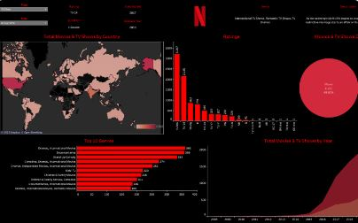
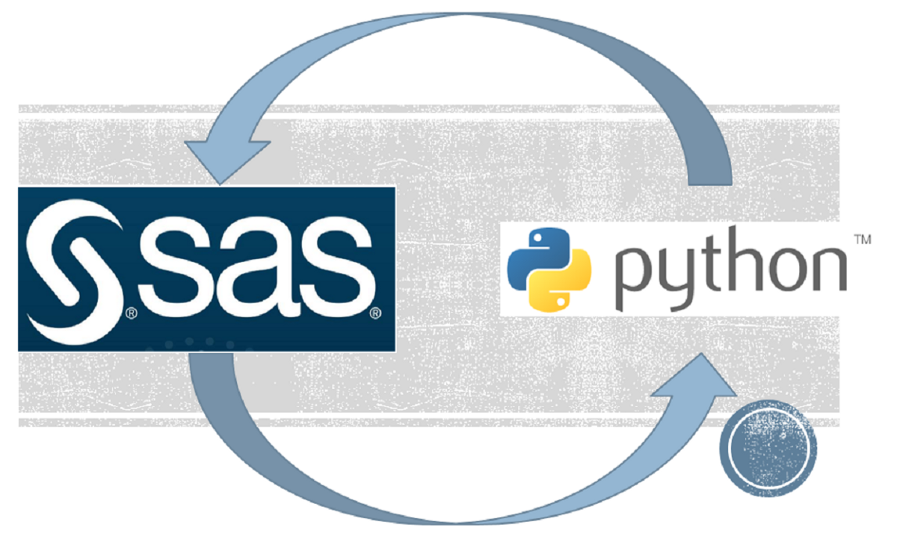

Due to the increasing prevalence of diabetes, it's important to recognize it early. This study creates an ideal model for early diabetes predictions and emphasizes exploratory data analysis, pandas, numpy, and scikit-learn.
The focus of this project was on exploratory data analysis, pandas, numpy, and scikit-learn. The multiple predictive analytics classification models to forecast heart failure in patients based on symptoms, resulting in the highest accuracy rate of 92.83% with the Random Forest Classifier.
The goal of this project was to properly predict each patient's Length of Stay so hospitals may optimize resource allocation and performance. Provide proper therapy and better post-acute care to reduce readmissions. This project focuses on exploratory data analysis, pandas, numpy, and scikit-learn.

The goal of this project was to use pandas, numpy, and scikit-learn to build a predicive model for liver disease. The multiple predictive analytics classification models to forecast liver disease in patients based on symptoms, resulting in the highest accuracy rate of 75.89% with Logistic Regression.
This project focuses on redesigning or improving a workflow, which involves mapping a process to find areas for improvement; to streamline clinical procedures. This project was developed by Wix, Javascript, and CSS.
This investigation focused on mask requirements and immunization rates to correlate significant changes to morbidity and death rates by utilizing Tableau. The dynamic and unknown public health advocacy is also being evaluated. The health care community couldn't agree on how to stop or prevent COVID-19's health problems.

This Tableau project analyzes Netflix viewing data and demographics to identify trends and opportunities for content creators and marketers. It uses interactive charts and features to allow users to explore the data.

This project uses Python and SAS for exploratory data analysis with an AUC score of 0.71 of Logistic Regression. The project aimed to compare the social determinants of health that contribute to the prevalence of type 2 diabetes in different populations.
This project explores the most successful champions at the League of Legends World Championships over the past decade. The project looks at data on the champions that have been picked and banned in each year's tournament, as well as their win rates and overall performance. By visualizing this data, the project aims to provide insights into the metagame of the World Championships and to identify trends in champion popularity and success over time.